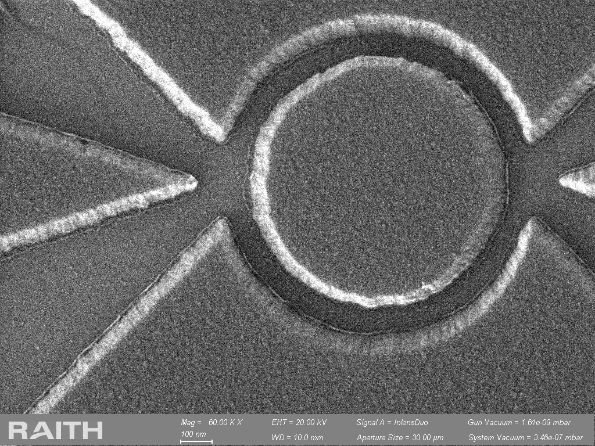

Positive resist
Often useful when high resolution and straightforward pattern definition are important. For lift-off, the developed profile and any undercut can strongly influence how cleanly the deposited film separates.
Fabrication • Patterning • Process Integration
Nanofabrication is where materials science, chemistry, plasma physics, lithography, and process engineering come together to turn a design into a functional device. Over the years, I have worked with a range of micro- and nanoscale fabrication techniques, and this page is where I collect both the fundamentals and the practical lessons that matter once a process leaves the textbook and enters the cleanroom.
Why It Matters
Nanofabrication is often described as a sequence of individual processes: coat a resist, expose a pattern, develop it, etch or deposit a material, remove the resist, and repeat. In practice, those steps are strongly coupled.
The resist profile can determine whether lift-off succeeds. The lithography mask can influence the achievable etch profile. Plasma conditions can change sidewall shape, selectivity, and surface condition. Film thickness and conformality can determine whether a later step remains electrically isolated or becomes shorted.
What makes nanofabrication interesting to me is exactly this interaction between physics and process integration. A process rarely fails because one tool simply “does not work.” More often, the final result reflects how multiple steps interact across the complete fabrication flow.
Lithography
Electron-beam lithography, or EBL, is one of the most versatile techniques for defining nanoscale patterns. A focused electron beam is scanned across an electron-sensitive resist according to a digital pattern. After development, the resist becomes either the final mask or an intermediate layer for etching, deposition, lift-off, or further pattern transfer.
What makes EBL especially useful is not only its resolution, but also the ability to write arbitrary geometries without a physical mask. This makes it well suited to research-scale device fabrication, alignment-sensitive structures, rapid design iteration, and patterns where feature size approaches the limits of optical lithography.

EBL resolution is often associated with the nominal beam size, but the final feature is determined by the entire process. Electron scattering, resist chemistry, resist thickness, exposure dose, development conditions, substrate composition, and local pattern density all influence the dimensions that remain after development.
A tool capable of producing a very small beam therefore does not automatically guarantee that every resist stack or pattern geometry can reproduce the same minimum feature size.
In a positive resist, the exposed regions become more soluble in the developer and are removed. In a negative resist, exposure causes the written regions to become less soluble, so the exposed material remains.
The choice depends on the application rather than one resist type being universally better. Important considerations include achievable resolution, sensitivity, resist thickness, etch resistance, pattern density, lift-off geometry, process compatibility, and writing time.
Often useful when high resolution and straightforward pattern definition are important. For lift-off, the developed profile and any undercut can strongly influence how cleanly the deposited film separates.
Can be useful for dense patterns or processes where different resist properties are advantageous. Sensitivity, crosslinking, etch resistance, removal, and feature geometry all become part of the tradeoff.
Exposure dose determines how much electron energy is delivered to the resist. Too little dose can leave features incompletely developed or undersized, while excessive dose can broaden features, close small gaps, or increase the influence of proximity effects.
In practice, an EBL process is usually developed through dose testing rather than relying on a single nominal value. The goal is not simply to find one dose that works, but to identify a useful process window where the required dimensions remain stable despite small variations in exposure or development.
Electrons do not deposit all of their energy exactly where the beam enters the resist. Forward scattering broadens the beam as electrons travel through the resist, while electrons that penetrate the substrate can backscatter and expose surrounding regions.
As a result, dense and isolated structures can receive different effective doses even when the nominal writing dose is identical. Proximity effects can alter line width, spacing, corner definition, and the uniformity of repeated features.
This becomes particularly important when a pattern contains regions with very different local densities. Dose correction, geometry adjustment, resist choice, substrate effects, and development conditions may all become part of the optimization.
Exposure changes the chemistry of the resist, but development determines which part of that modified resist actually remains on the sample. Developer composition, time, temperature, agitation, rinse conditions, and resist thickness can therefore change the final critical dimension and profile.
I find it more useful to treat exposure and development as one coupled process rather than optimizing them independently.
Possible causes include excessive dose, proximity effects, over-development, or a resist stack that is not well matched to the required dimensions.
Residual resist can come from insufficient exposure, development time, temperature variation, or resist thickness and chemistry.
A resist image can look good but still fail during etching if the mask is too thin, selectivity is insufficient, or the resist degrades in the plasma.
Even well-resolved features can fail during lift-off if deposition bridges the resist sidewall or the resist profile does not provide enough discontinuity.
Optical Patterning
Photolithography remains one of the most important patterning techniques in microfabrication because it combines relatively high throughput with reliable pattern transfer over much larger areas than electron-beam lithography.
When the required feature size does not demand EBL, optical lithography is often the more practical choice for device contacts, alignment levels, larger structural features, repeated processing, and wafer-scale fabrication.
A photoresist-coated substrate is exposed to ultraviolet light through a patterned mask, or through a maskless optical writing system. The exposure changes the solubility of the resist, and development converts that latent image into a physical resist pattern.
As with EBL, the final pattern is not determined by exposure alone. Resist thickness, wavelength, mask geometry, substrate reflectivity, focus, exposure dose, development conditions, and the quality of mask-to-wafer contact all influence the result.
In contact lithography, the photomask is brought into direct contact with the resist-coated substrate. Minimizing the gap helps preserve image fidelity because diffraction has less distance over which to spread the projected pattern.
In proximity lithography, a small separation is intentionally maintained between the mask and wafer. This reduces mechanical contact and the risk of mask or wafer damage, but the additional gap increases diffraction and can reduce resolution.
Can provide better pattern fidelity when intimate mask-to-resist contact is achieved, but particles, surface topography, or repeated contact can create defects or damage.
Avoids direct mask contact and can be useful for delicate surfaces, but the mask-to-wafer gap becomes a critical process variable because diffraction increases as the separation grows.
Exposure dose must be high enough to create the required chemical change through the resist thickness, but excessive exposure can broaden features or reduce the separation between nearby structures.
Focus and mask-to-wafer spacing are closely related to image quality. Small deviations that are insignificant for large features can become important as the critical dimension approaches the optical resolution limit.
This is why dose matrices and controlled process tests are often more useful than assuming that a single exposure setting will work equally well for every resist thickness, substrate, and feature geometry.
Resist thickness is a process-design choice rather than simply a coating parameter. A thicker resist may provide better protection during a later etch or create more vertical space for lift-off, but it can also make small features more difficult to resolve.
The required thickness therefore depends on what the resist must do next: survive a plasma, define a lift-off profile, protect an underlying film, or simply transfer a relatively shallow pattern.
Maskless direct-write systems expose the resist according to a digital layout rather than using a physical photomask. They occupy a useful space between conventional photolithography and EBL.
They generally do not provide the ultimate resolution of EBL, but they can dramatically simplify design iteration because a new pattern does not require fabrication of a new photomask.
This makes direct-write lithography particularly useful for prototyping, larger device features, contact levels, test structures, and process development where the design may change frequently.
Can reduce feature fidelity, soften edges, and change the final dimensions because of diffraction between the mask and resist.
Can lead to incomplete resist development, residual material, or features that do not fully open through the resist thickness.
Can broaden features, reduce small gaps, and shift the critical dimension away from the intended design.
Resist-thickness variation can produce local differences in exposure, development, focus, and downstream etch or lift-off performance.
Pattern Transfer
A well-defined resist pattern is only the starting point. The real fabrication challenge is transferring that geometry into another material while preserving the dimensions, profile, and surface quality required by the device.
Pattern transfer can involve dry etching, ion milling, wet etching, or deposition and lift-off. Each approach introduces its own constraints, and the best choice depends on the material system, required feature size, etch depth, sidewall profile, mask durability, and sensitivity of the surrounding layers.
The final feature is determined by both the lithography mask and the transfer process. A resist pattern can look excellent under a microscope and still produce poor device geometry if the mask erodes, the etch becomes isotropic, the sidewalls roughen, or the underlying material reacts differently than expected.
This is why I think about lithography and pattern transfer together. The resist thickness, mask material, etch chemistry, selectivity, and required depth should be considered before the pattern is written.
Selectivity describes how quickly the target material is removed relative to the mask. If the mask etches too quickly, it can lose thickness before the desired etch depth is reached.
Mask erosion can also change the critical dimension during the process. For deeper etches or more aggressive plasma chemistries, the mask may need to be thicker, more resistant, or replaced by a hard mask such as a dielectric or metal layer.
Simple and convenient when the resist has sufficient plasma resistance, but thickness and thermal stability can become limiting for longer or more aggressive etches.
Useful when greater etch resistance or dimensional control is required. The hard mask introduces additional deposition and removal steps, but can substantially improve transfer capability.
Many device structures require material to be removed primarily in the vertical direction. An anisotropic etch preserves lateral dimensions better than an isotropic process and can produce steeper sidewalls.
But verticality alone does not guarantee a good profile. Bowing, undercut, footing, taper, roughness, redeposition, and sidewall damage can all affect the usefulness of the final structure.
In practice, sidewall shape is often just as important as etch depth because it can influence electrical isolation, optical behavior, subsequent conformal coating, and metallization.
Dry etching often relies on a combination of chemical reactions and energetic ion bombardment. The chemical component provides material selectivity through volatile reaction products, while ion bombardment helps drive directional removal and can assist reactions at the surface.
Increasing physical bombardment can improve anisotropy, but it can also increase surface damage, mask erosion, and redeposition. Increasing the chemical contribution may improve selectivity, but excessive lateral chemical etching can reduce profile control.
Process development therefore becomes a balance between etch rate, anisotropy, selectivity, surface condition, and dimensional control.
Etch behavior can depend on how much exposed material is present in the chamber. Large open areas and dense arrays of small features may consume reactive species differently, creating local or wafer-scale differences in etch rate.
This means a recipe that performs well on a small test pattern may behave differently when transferred to a denser design or a larger patterned area.
Plasma tools are not perfectly independent of their usage history. Residues from previous materials, chamber wall condition, cleaning, seasoning, and contamination can influence plasma chemistry and reproducibility.
When an established process suddenly changes, chamber history is one of the variables worth checking before immediately modifying the recipe.
Excessive lateral etching can shrink the transferred feature or create a profile that is narrower beneath the mask than intended.
Sidewalls can curve or slope because of the balance between chemical etching, ion directionality, mask erosion, and sidewall passivation.
Insufficient selectivity can thin or distort the mask before the target depth is reached, shifting the final feature dimensions.
Nonvolatile products or physically sputtered material can redeposit on surfaces or sidewalls and interfere with the next fabrication step.
Plasma Etching
Reactive ion etching (RIE) is one of the central pattern-transfer techniques in micro- and nanofabrication. Unlike purely physical material removal, plasma etching combines chemically reactive species with energetic ion bombardment to remove selected materials while preserving the patterned mask.
What makes plasma etching particularly interesting is the number of interacting variables. Gas chemistry, plasma density, ion energy, pressure, flow rate, substrate condition, mask material, and chamber history can all influence the final etch rate, selectivity, anisotropy, and sidewall profile.
In conventional RIE, RF power is used to sustain the plasma and generate the substrate bias that accelerates ions toward the wafer. Plasma density and ion bombardment are therefore relatively coupled.
ICP-RIE introduces a separate inductively coupled plasma source. This allows plasma generation and substrate bias to be controlled more independently, providing greater flexibility when balancing chemical activity, ion flux, and ion energy.
Reactive radicals generated in the plasma interact chemically with the exposed material. An effective chemistry forms reaction products that can leave the surface rather than accumulating during the etch.
Positively charged ions are accelerated toward the substrate. Their directional momentum can assist surface reactions and promote anisotropic material removal.
The final etch behavior depends on how reactive species adsorb, react, desorb, and interact with ion bombardment at the material surface.
In an ICP system, the inductively coupled source generates a high-density plasma. Increasing ICP power generally increases the population of ions, electrons, radicals, and other reactive species available to participate in the etch.
A higher plasma density can increase etch rate, but more plasma is not automatically better. Changes in species concentration can alter selectivity, surface chemistry, mask behavior, and sidewall passivation.
ICP power therefore needs to be considered together with bias power, pressure, gas chemistry, and the material being etched.
The substrate bias influences the energy with which ions reach the wafer. Increasing ion energy can enhance directional material removal and help produce more anisotropic profiles.
However, excessive ion bombardment can increase mask erosion, surface damage, sputtering, redeposition, and loss of selectivity. For sensitive materials or interfaces, minimizing unnecessary ion damage may be just as important as achieving the desired etch depth.
One advantage of ICP-RIE is therefore the ability to maintain a relatively dense plasma while independently adjusting the ion energy reaching the substrate.
Pressure affects how frequently particles collide while travelling through the plasma sheath and chamber. At lower pressure, the mean free path is generally longer, allowing ions to reach the substrate with fewer collisions and better directional control.
At higher pressure, more collisions can broaden the distribution of particle trajectories and modify the balance between chemical and physical etching.
Pressure also influences plasma stability, residence time, reactive species concentration, and transport of reaction products, so its effect cannot be considered independently from gas flow and power.
The choice of plasma chemistry depends strongly on the material being etched and the volatility of the products that can be formed. Fluorine-based chemistries are widely used for many silicon-containing and dielectric materials, while chlorine-based chemistries are commonly used for a range of III-V semiconductor and metal-containing systems.
Additional gases can be introduced to modify sidewall passivation, dilution, ion bombardment, polymer formation, or the concentration of reactive species.
The relevant question is therefore not simply whether a chemistry can etch a material, but whether it can do so with the required selectivity, profile, surface quality, and compatibility with the rest of the device.
Selectivity compares the removal rate of the target material with the removal rate of another material, often the lithography mask or an underlying layer.
If the mask selectivity is insufficient, the resist or hard mask can erode before the required depth is reached. Mask erosion can also change the lateral dimensions of the feature during the etch.
For this reason, resist thickness and mask material should be selected together with the expected etch depth and process chemistry rather than treated as independent decisions.
Etch rate alone provides very little information about whether a process is suitable for device fabrication. Two recipes can remove the same film at similar rates while producing completely different sidewall profiles.
Undercut, taper, bowing, roughness, footing, mask erosion, and redeposition can all affect subsequent processing and ultimately device performance.
This is why cross-sectional or high-resolution inspection can be much more informative during process development than simply measuring how much material was removed.
Excessive lateral material removal can reduce dimensional control and produce a feature narrower beneath the mask than intended.
Sidewall curvature or slope can result from the balance between directional ion bombardment, chemical etching, mask behavior, and sidewall passivation.
Excessive ion energy or poor selectivity can consume the mask during the process and change the dimensions transferred into the target material.
Nonvolatile reaction products or sputtered material can accumulate on surfaces and sidewalls, creating contamination or interfering with subsequent processing.
Energetic ion bombardment can modify sensitive surfaces or interfaces, making ion energy an important consideration beyond simply maximizing etch rate.
Chamber condition, seasoning, previous materials, cleaning history, and tool state can change plasma behavior even when the nominal recipe remains unchanged.
Metallization
Lift-off is one of the most common ways to define patterned metal layers in micro- and nanofabrication. The basic sequence is simple: pattern the resist, deposit the film, and dissolve the resist so that only the material deposited directly on the substrate remains.
In practice, lift-off quality depends strongly on geometry. The resist profile, film thickness, deposition directionality, step coverage, adhesion, and solvent access all influence whether the unwanted material separates cleanly or remains connected to the patterned film.
Lift-off works best when the film deposited on top of the resist is not continuously connected to the film deposited on the exposed substrate. A break in coverage near the resist sidewall gives the solvent access to the resist and allows the unwanted film to detach.
If the deposition coats the sidewall continuously, the film can bridge across the resist profile. Once that happens, even a perfectly defined lithography pattern can produce poor lift-off.
An undercut profile is often helpful for lift-off because the resist sidewall recedes beneath the top surface. This reduces the chance that deposited material forms a continuous bridge from the substrate to the top of the resist.
Bilayer resist stacks are commonly used when a controlled undercut is needed. The lower resist layer can develop laterally beneath the upper imaging layer, creating a geometry that favors discontinuous deposition.
The required undercut depends on the film thickness, deposition method, feature size, and resist thickness. Too little undercut may not solve bridging, while excessive undercut can weaken the resist structure or distort small features.
Resist thickness should be chosen with the final deposited film in mind. If the deposited layer becomes too thick relative to the resist profile, material can coat the sidewall and connect the top film to the film on the substrate.
A thicker resist can provide more vertical separation, but it can also reduce lithographic resolution or make small features harder to define. As with many fabrication choices, the useful solution is a balance rather than simply maximizing one parameter.
Evaporation is relatively directional because atoms or molecules travel predominantly along line-of-sight trajectories from the source toward the substrate. This makes e-beam and thermal evaporation particularly compatible with lift-off because sidewall coverage can remain limited.
Sputtering is generally less directional. Scattering in the process gas and the broader angular distribution of arriving species can improve sidewall and step coverage, which is valuable for many applications but can make lift-off more difficult.
The same property can therefore be beneficial or problematic depending on the fabrication goal: conformality is useful when continuous coverage is required, while directionality is often preferred when clean lift-off is the priority.
Directional deposition is often favorable for lift-off because the resist sidewalls receive less material, helping maintain separation between the top film and the device layer.
Better step coverage can be desirable for device continuity, but the broader deposition angle can coat resist sidewalls and make clean lift-off more challenging.
A directional film can produce excellent lift-off but may not cover vertical or sloped device topography well. Conversely, a more conformal film can improve electrical continuity across steps while becoming harder to pattern by lift-off.
This becomes especially important when contacts need to reach across dielectric edges, etched mesas, or other three-dimensional structures. The deposition method should therefore be chosen based on the complete device geometry rather than only the lithography process.
Even a geometrically perfect metal pattern can fail if the film does not adhere well to the underlying surface. Native oxides, organic residue, moisture, contamination, or incompatible materials can weaken the interface.
Surface preparation and adhesion layers are therefore often part of the metallization process. The appropriate approach depends on the substrate, contact material, device function, and whether the interface is intended to be electrically active.
Once deposition is complete, the resist still needs to be removed without damaging the desired structure. Solvent choice, soaking time, temperature, agitation, and mechanical assistance can all affect the result.
Aggressive ultrasonication may remove stubborn material, but it can also damage delicate features. For small or fragile structures, patience and controlled solvent access can be more important than mechanical force.
Continuous deposition along the resist sidewall can leave narrow metal remnants around the patterned feature after lift-off.
If the film connects across a narrow gap or along the resist profile, neighboring structures can become electrically shorted.
Poorly separated film from the resist top can break into particles during lift-off and redeposit elsewhere on the sample.
Surface contamination, incompatible materials, or inadequate interface preparation can cause the desired metal pattern to peel or delaminate.
Insufficient solvent access, inadequate undercut, or excessive film thickness can leave unwanted material attached to the device.
Highly directional deposition can become too thin at sharp topographic transitions, producing discontinuous electrical paths.
Process Integration
A fabrication process is more than a collection of individual recipes. Lithography, etching, deposition, thermal processing, passivation, cleaning, and metrology all interact, and a change that improves one step can create a problem several steps later.
This is what makes process integration different from optimizing an isolated operation. The objective is not to make every individual step perfect on its own, but to build a complete fabrication flow that repeatedly produces the intended device structure and performance.
Consider a simple example: increasing dielectric thickness may improve electrical isolation, but it can also make contact opening more difficult, increase topography, and create challenges for subsequent metallization.
Similarly, a more conformal deposition may improve sidewall coverage while making lift-off difficult. A thinner resist may improve lithographic resolution but provide insufficient protection during a later plasma etch.
The best process condition is therefore often a compromise that satisfies several downstream requirements simultaneously.
A recipe that produces an excellent result at one exact condition is not necessarily a robust manufacturing process. Real fabrication contains variation: film thickness changes slightly, resist coatings vary, chambers drift, substrates differ, and measurements contain uncertainty.
A useful process therefore needs a window in which reasonable variation still produces an acceptable result. Understanding that window also helps identify which parameters are truly critical and which have more tolerance.
For me, process development is therefore not simply about finding the best-looking sample. It is about finding conditions that can be repeated reliably.
Surface preparation, film thickness, lithography quality, and previous thermal or plasma exposure establish the starting condition for the next process.
The immediate recipe determines more than its primary output. It can also change surface chemistry, topography, stress, damage, or interface condition.
Those changes influence later lithography, deposition, contact formation, passivation, packaging, and ultimately device performance.
A process developed on one geometry does not always behave identically when feature size, pitch, aspect ratio, or pattern density changes. Deposition and etching are three-dimensional processes, so the available space around a structure can influence how material reaches or leaves the surface.
For example, a deposition that fills a relatively open structure may behave differently in a narrow gap, while a conformal film can gradually close an opening from the sidewalls before the underlying volume has been completely filled.
This is why scaling a device is not always equivalent to scaling a drawing. Changes in geometry can require changes in the fabrication strategy itself.
Process integration depends on knowing what actually happened at each critical stage. SEM, profilometry, ellipsometry, reflectometry, AFM, XRD, electrical measurements, and cross-sectional analysis can provide different pieces of that information.
I think of metrology as part of fabrication rather than something that happens after fabrication. Measurements create the feedback loop needed to compare the intended process with the structure that was actually produced.
When a device fails, that process history can be used to work backward from the final symptom and identify where the structure first departed from the expected result.
The step where a failure becomes visible is not necessarily the step that caused it. Poor electrical performance after metallization, for example, could originate from the metal itself, but it could also reflect an earlier surface-cleaning problem, incomplete etching, dielectric residue, or damage introduced upstream.
I therefore prefer to troubleshoot by building hypotheses from the process history and available measurements, then testing those hypotheses systematically rather than immediately changing multiple recipe parameters.
When a previously stable process moves outside its expected window, I first look for what changed. That can include the incoming material, resist or chemical lot, tool condition, chamber history, recipe revision, operator sequence, upstream processing, or even the measurement method used to evaluate the result.
Run records, travelers, tool logs, metrology, and comparison with successful baseline samples help narrow the possibilities. Once a likely cause is identified, controlled experiments can distinguish correlation from the actual mechanism.
Process changes are sometimes necessary because of tool availability, scaling, yield, material changes, or a newly identified failure mode. But even a seemingly small modification can affect several downstream operations.
Before adopting a change, I find it useful to define what problem the change is intended to solve, what new risks it introduces, how success will be measured, and which downstream steps need to be revalidated.
This makes process development more deliberate and helps prevent solving one problem by quietly creating another.
A failure may appear during a late fabrication step even though the underlying deviation was introduced much earlier in the process.
A recipe may work under ideal conditions but become unreliable when normal tool, material, or dimensional variation is introduced.
Changes in pitch, aspect ratio, pattern density, or topography can alter deposition, etching, coating, and filling behavior.
Nominally similar equipment can produce different results because of chamber geometry, hardware, calibration, history, or process conditions.
Missing or inaccurate run information makes it much harder to separate real process changes from uncontrolled variation.
Adjusting the step where a defect becomes visible may temporarily improve the result without addressing the actual upstream mechanism.
Practical Lessons
When something suddenly changes, I first ask what changed: material lot, tool, chamber condition, resist, operator, measurement method, or upstream process.
SEM, profilometry, ellipsometry, reflectometry, AFM, and other measurements are not just final characterization tools. They are feedback mechanisms for process development.
A process is not robust because it worked once. A useful process has a sufficiently wide process window to tolerate realistic variation.
A defect often becomes visible several steps after it was introduced. When troubleshooting, I work backward through the process flow rather than assuming the most recent step caused the problem.
Continuing Notes
Nanofabrication is too broad to fit into one page. I plan to continue expanding these notes with deeper discussions of lithography, plasma etching, process integration, failure modes, device fabrication, and the physics behind the tools we use in the cleanroom.